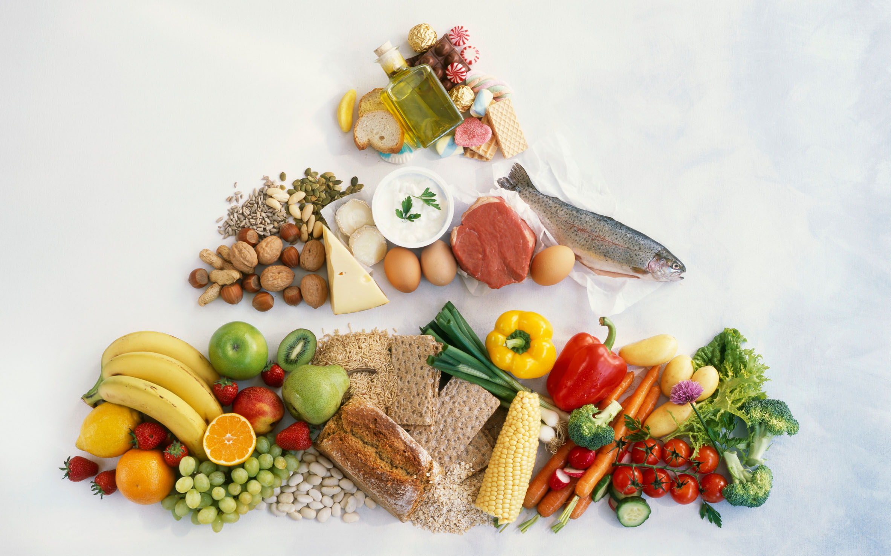

Nutrition-Focused Light Eats.
For Your Wellness Goals.
Welcome to Light Bites & Bright Moments, your fat-loss recipe hub. Explore our visualized, nutrition-packed meals with step-by-step guides. Filter by calories, time or diet—find your healthy favorite.
Read Full Article

Nutrition Transparent: Bites with Data
Precise nutrition data (calories, protein, carbs, etc.) for every meal. Visual charts make tracking intake easy.

Visual Recipes
Step-by-step real-shot photos + concise instructions. Cooking fat-loss meals is a breeze.

Moments for Every Scene
Fat-loss recipes for all daily scenes: quick breakfasts, office lunches, family dinners and more.